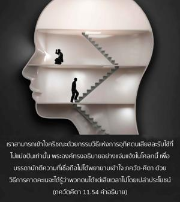
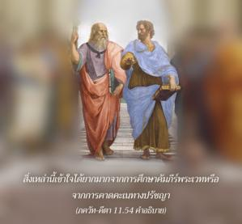
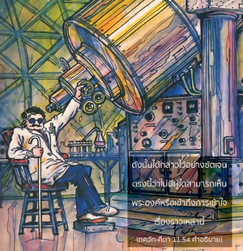
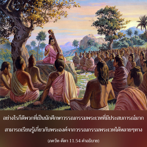
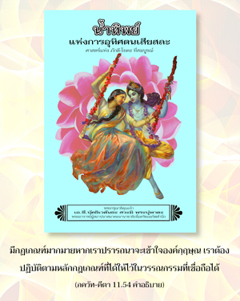
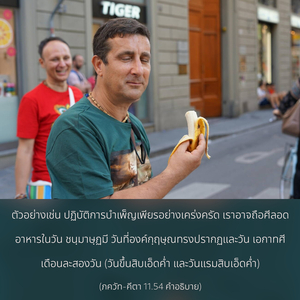
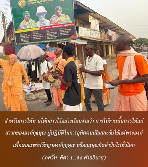

อรฺชุน ที่รัก การอุทิศตนเสียสละรับใช้ที่ไม่แบ่งแยกเท่านั้นจึงสามารถเข้าใจข้าตามความเป็นจริง ซึ่งยืนอยู่ต่อหน้าเธอ และสามารถเห็นได้โดยตรง ด้วยวิธีนี้เท่านั้นที่เธอจะสามารถเข้าไปในความเร้นลับแห่งการเข้าใจข้าได้







เราสามารถเข้าใจองค์กฺฤษฺณด้วยกรรมวิธีแห่งการอุทิศตนเสียสละรับใช้ที่ไม่แบ่งแยกเท่านั้น พระองค์ทรงอธิบายอย่างแจ่มแจ้งในโศลกนี้เพื่อบรรดานักตีความที่เชื่อถือไม่ได้พยายามเข้าใจ ภควัท-คีตา ด้วยวิธีการคาดคะเนจะได้รู้ว่าพวกตนได้แต่เสียเวลาไปโดยเปล่าประโยชน์ ไม่มีผู้ใดสามารถเข้าใจองค์กฺฤษฺณ ไม่เข้าใจว่าทรงมาจากพระบิดาพระมารดาในรูปลักษณ์สี่กรได้อย่างไร และเปลี่ยนพระวรกายมาเป็นรูปลักษณ์สองกรโดยทันทีได้อย่างไร สิ่งเหล่านี้เข้าใจได้ยากมากจากการศึกษาคัมภีร์พระเวท หรือจากการคาดคะเนทางปรัชญา ดังนั้น ได้กล่าวไว้อย่างชัดเจนตรงนี้ว่า ไม่มีผู้ใดสามารถเห็นพระองค์ หรือเข้าถึงการเข้าใจเรื่องราวเหล่านี้ อย่างไรก็ดี พวกที่เป็นนักศึกษาวรรณกรรมพระเวทที่มีประสบการณ์มากสามารถเรียนรู้เกี่ยวกับพระองค์จากวรรณกรรมพระเวทได้หลายๆ ทาง มีกฏเกณฑ์มากมายหากเราปรารถนาจะเข้าใจองค์กฺฤษฺณ เราต้องปฏิบัติตามหลักกฎเกณฑ์ที่ได้ให้ไว้ในวรรณกรรมที่เชื่อถือได้ เราสามารถปฏิบัติการบำเพ็ญเพียรตามหลักธรรมเหล่านั้น ตัวอย่างเช่น ปฏิบัติการบำเพ็ญเพียรอย่างเคร่งครัด เราอาจถือศีลอดอาหารในวัน ชนฺมาษฺฏมี วันที่องค์กฺฤษฺณทรงปรากฏและวัน เอกาทศี เดือนละสองวัน (วันขึ้นสิบเอ็ดค่ำ และวันแรมสิบเอ็ดค่ำ) สำหรับการให้ทานได้กล่าวไว้อย่างเรียบง่ายว่า การให้ทานนั้นควรให้แก่สาวกขององค์กฺฤษฺณ ผู้ปฏิบัติในการอุทิศตนเสียสละรับใช้แด่พระองค์ เพื่อเผยแพร่ปรัชญาองค์กฺฤษฺณ หรือกฺฤษฺณจิตสำนึกไปทั่วโลก กฺฤษฺณจิตสำนึกเป็นพรสำหรับมนุษยชาติ รูป โคสฺวามี ได้ชื่นชมองค์ ไจตนฺย ว่าทรงเป็นบุคคลผู้มีจิตใจกว้างขวางที่สุดในการให้ทาน เพราะความรักแด่องค์กฺฤษฺณเป็นสิ่งยากมากที่จะบรรลุถึง แต่องค์ ไจตนฺย ทรงแจกจ่ายโดยไม่คิดมูลค่าใดๆ ทั้งสิ้น ดังนั้น หากผู้ใดให้เงินแก่บุคคลที่เกี่ยวข้องกับการแจกจ่ายกฺฤษฺณจิตสำนึก ทานนั้นให้ไปเพื่อเผยแพร่กฺฤษฺณจิตสำนึก จึงเป็นการให้ทานที่ยิ่งใหญ่ที่สุดในโลก และหากผู้ใดปฏิบัติบูชาเหมือนที่กำหนดไว้ในวัด (วัดในประเทศอินเดียโดยทั่วไปจะมีพระปฏิมาของพระวิษณุ หรือองค์กฺฤษฺณเสมอ) นั่นเป็นโอกาสที่จะก้าวหน้าด้วยการถวายการบูชา และถวายความเคารพแด่พระองค์ สำหรับผู้ที่เริ่มต้นการอุทิศตนเสียสละรับใช้องค์ภควานฺ การบูชาในวัดนั้นเป็นสิ่งสำคัญ ได้ยืนยันไว้ในวรรณกรรมพระเวท (เศฺวตาศฺวตร อุปนิษทฺ 6.23) ว่า
ยสฺย เทเว ปรา ภกฺติรฺ
ยถา เทเว ตถา คุเรา
ตไสฺยเต กถิตา หฺยฺ อรฺถาห์
ปฺรกาศนฺเต มหาตฺมนห์
ผู้ที่มีความแน่วแน่ในการอุทิศตนเสียสละเพื่อองค์ภควานฺ และมีพระอาจารย์ทิพย์ที่มีศรัทธาอย่างแน่วแน่เช่นเดียวกันนี้เป็นผู้ชี้นำ สามารถเห็นองค์ภควานฺด้วยการเปิดเผย เราไม่สามารถเข้าใจองค์กฺฤษฺณจากการคาดคะเนทางจิตใจ สำหรับผู้ที่ไม่ได้รับการฝึกฝนโดยตรงภายใต้การนำทางของพระอาจาร์ทิพย์ผู้ที่เชื่อถือได้ เป็นไปไม่ได้แม้แต่จะเริ่มเข้าใจองค์กฺฤษฺณ ได้ใช้คำว่า ตุ เป็นพิเศษตรงนี้ เพื่อแสดงว่าไม่มีวิธีอื่นใดที่สามารถใช้ได้ แนะนำได้ หรือสามารถประสบผลสำเร็จในการเข้าใจองค์กฺฤษฺณ
รูปลักษณ์ส่วนพระองค์ขององค์กฺฤษฺณ เช่น รูปลักษณ์สองกร และสี่กร อธิบายด้วยคำว่า สุ-ทุรฺทรฺศมฺ หมายความว่า เห็นได้ยากมาก ซึ่งแตกต่างจากรูปลักษณ์จักรวาลชั่วคราวที่แสดงให้ อรฺชุน เห็นโดยสิ้นเชิง รูปลักษณ์สี่กรของ นารายณ และรูปลักษณ์สองกรขององค์กฺฤษฺณทรงเป็นอมตะ และเป็นทิพย์ ในขณะที่รูปลักษณ์จักรวาลที่แสดงให้ อรฺชุน นั้นชั่วคราวไม่ถาวร คำว่า ตฺวทฺ อเนฺยน น ทฺฤษฺฏ-ปูรฺวมฺ (โศลก47) กล่าวว่าก่อนหน้า อรฺชุน ไม่เคยมีผู้ใดเห็นรูปลักษณ์จักรวาลนั้นมาก่อน และยังแนะนำว่า ในหมู่สาวกไม่มีความจำเป็นที่ต้องแสดงรูปลักษณ์นี้ที่องค์กฺฤษฺณทรงแสดงตามที่ อรฺชุน ขอร้อง เพื่อในอนาคตเมื่อมีคนอ้างว่าตนเองเป็นอวตารขององค์ภควานฺ ผู้คนจะได้ขอร้องให้แสดงรูปลักษณ์จักรวาลของเขาให้เห็น
คำว่า น ได้ใช้หลายครั้งในโศลกก่อนหน้านี้ แสดงให้เห็นว่าเราไม่ควรภูมิใจมากกับประกาศณียบัตร ในฐานะที่เป็นนักศึกษาทางวิชาการในวรรณกรรมพระเวทเหล่านี้ เราต้องปฏิบัติการอุทิศตนเสียสละรับใช้ต่อองค์กฺฤษฺณตรงนี้เท่านั้น จึงจะสามารถพยายามเขียนคำอธิบายเกี่ยวกับ ภควัท-คีตา ได้
องค์กฺฤษฺณทรงเปลี่ยนรูปลักษณ์จักรวาลมาเป็นรูปลักษณ์นารายณ์สี่กร จากนั้นทรงเปลี่ยนมาเป็นรูปลักษณ์ตามธรรมชาติสองกรของพระองค์ แสดงให้เห็นว่ารูปลักษณ์สี่กร และรูปลักษณ์อื่นๆ ที่กล่าวไว้ในวรรณกรรมพระเวททั้งหมดออกมาจากองค์กฺฤษฺณสองกรองค์แรกสุด องค์กฺฤษฺณทรงเป็นองค์แรกของอวตารที่ออกมาทั้งหมด องค์กฺฤษฺณทรงแตกต่างแม้จากรูปลักษณ์เหล่านี้ จึงไม่จำเป็นต้องพูดถึงแนวคิดที่ไร้รูปลักษณ์ สำหรับรูปลักษณ์สี่กรขององค์กฺฤษฺณได้กล่าวไว้อย่างชัดเจนว่า แม้รูปลักษณ์สี่กรขององค์กฺฤษฺณที่คล้ายพระองค์มากที่สุด (ทรงมีพระนามว่า มหา-วิษฺณุ ที่บรรทมอยู่ในมหาสมุทรจักรวาล และจากการหายใจของพระองค์จักรวาลมากมายจนนับไม่ถ้วนปรากฏออกมา และเข้าไปในพระวรกายของพระองค์) ก็เป็นภาคที่แบ่งแยกขององค์ภควานฺ เช่นเดียวกัน ดังที่ได้กล่าวไว้ใน พฺรหฺม-สํหิตา (5.48) ว่า
ยไสฺยก-นิศฺวสิต-กาลมฺ อถาวลมฺพฺย
ชีวนฺติ โลม-วิล-ชา ชคทฺ-อณฺฑ-นาถาห์
วิษฺณุรฺ มหานฺ ส อิห ยสฺย กลา-วิเศโษ
โควินฺทมฺ อาทิ-ปุรุษํ ตมฺ อหํ ภชามิ
“องค์ มหา-วิษฺณุ ที่จักรวาลอันนับไม่ถ้วนทั้งหลายได้เข้าไป และออกมาอีกครั้งจากพระวรกายของพระองค์ ด้วยวิธีการหายใจของพระองค์ มหา-วิษฺณุ ทรงเป็นภาคที่แบ่งแยกโดยสมบูรณ์ขององค์กฺฤษฺณ ฉะนั้น ข้าขอบูชา โควินฺท กฺฤษฺณ แหล่งกำเนิดของแหล่งกำเนิดทั้งปวง” ดังนั้น โดยสรุปแล้ว เราควรบูชารูปลักษณ์ส่วนพระองค์ขององค์กฺฤษฺณว่า เป็นองค์ภควานฺผู้ทรงมีความสุขเกษมสำราญนิรันดร และความรู้ พระองค์ทรงเป็นแหล่งกำเนิดของรูปลักษณ์ วิษฺณุ ทั้งหมด ทรงเป็นแหล่งกำเนิดของรูปลักษณ์อวตารทั้งหมด และทรงเป็นบุคลิกภาพสูงสุดองค์แรก ดังที่ได้ยืนยันไว้ใน ภควัท-คีตา
ในวรรณกรรมพระเวท (โคปาล -ทาพะนี อุพะนิชัด 1.1) ข้อความนี้ปรากฏ
สจฺ-จิทฺ-อานนฺท-รูปาย
กฺฤษฺณายากฺลิษฺฏ-การิเณ
นโม เวทานฺต-เวทฺยาย
คุรเว พุทฺธิ-สากฺษิเณ
“ข้าขอแสดงความเคารพอย่างสูงแด่องค์กฺฤษฺณ ผู้ทรงมีรูปลักษณ์ทิพย์แห่งความสุขเกษมสำราญ เป็นอมตะ และความรู้ ข้าขอแสดงความเคารพแด่พระองค์ เพราะว่าการเข้าใจพระองค์หมายถึงการเข้าใจคัมภีร์พระเวท ดังนั้น พระองค์ทรงเป็นพระอาจารย์ทิพย์สูงสุด” และได้กล่าวต่อไปว่า กฺฤษฺโณ ไว ปรมํ ไทวตมฺ “องค์กฺฤษฺณทรงเป็นบุคลิกภาพสูงสุดแห่งพระเจ้า” (โคปาล-ตาปนี อุปนิษทฺ 1.3) เอโก วศี สรฺว-คห์ กฺฤษฺณ อีฑฺยห์ “องค์กฺฤษฺณองค์เดียวเท่านั้นทรงเป็นบุคลิกภาพสูงสุดแห่งพระเจ้า และทรงเป็นที่เคารพบูชา” เอโก ’ปิ สนฺ พหุธา โย ’วภาติ “องค์กฺฤษฺณทรงเป็นหนึ่ง แต่พระองค์ทรงปรากฏในรูปลักษณ์ที่ไม่จำกัดโดยอวตารที่แบ่งภาคออกไป” (โคปาล-ตาปนี อุปนิษทฺ 1.21)
พฺรหฺม-สํหิตา (5.1) กล่าวว่า
อีศฺวรห์ ปรมห์ กฺฤษฺณห์
สจฺ-จิทฺ-อานนฺท-วิคฺรหห์
อนาทิรฺ อาทิรฺ โควินฺทห์
สรฺว-การณ-การณมฺ
“บุคลิกภาพสูงสุดแห่งพระเจ้าคือองค์กฺฤษฺณ ผู้ทรงมีพระวรกายแห่งความเป็นอมตะความรู้ และความสุขเกษมสำราญ พระองค์ทรงไม่มีจุดเริ่มต้น เพราะทรงเป็นจุดเริ่มต้นของทุกสิ่งทุกอย่าง พระองค์ทรงเป็นแหล่งกำเนิดของแหล่งกำเนิดทั้งปวง”
ได้กล่าวไว้ที่อื่นว่า ยตฺราวตีรฺณํ กฺฤษฺณาขฺยํ ปรํ พฺรหฺม นรากฺฤติ “สัจธรรมสูงสุดทรงเป็นบุคคลมีพระนามว่า กฺฤษฺณ และบางครั้งพระองค์เสด็จมาบนโลกนี้” ทำนองเดียวกัน ใน ศฺรีมทฺ-ภาควตมฺ เราพบการพรรณนาถึงอวตารต่างๆ ทั้งหลายของบุคลิกภาพสูงสุดแห่งพระเจ้า และในรายพระนามนี้ พระนาม กฺฤษฺณ ทรงปรากฏ แต่ได้กล่าวไว้ว่า องค์กฺฤษฺณองค์นี้ไม่ใช่อวตารขององค์ภควานฺ แต่ทรงเป็นบุคลิกภาพสูงสุดแห่งพระเจ้าองค์เดิมด้วยพระองค์เอง (เอเต จำศ-กลาห์ ปุํสห์ กฺฤษฺณสฺ ตุ ภควานฺ สฺวยมฺ)
ทำนองเดียวกัน ใน ภควัท-คีตา องค์ภควานฺทรงตรัสว่า มตฺตห์ ปรตรํ นานฺยตฺ “ไม่มีอะไรเหนือไปกว่ารูปลักษณ์ของข้าในรูปองค์ภควานฺ ศฺรี กฺฤษฺณ” พระองค์ตรัสใน ภควัท-คีตา ไว้อีกที่หนึ่งว่า อหมฺ อาทิรฺ หิ เทวาน “ข้าคือแหล่งกำเนิดของมวลเทวดา” และหลังจากเข้าใจ ภควัท-คีตา จากองค์กฺฤษฺณ อรฺชุน ทรงยืนยันด้วยคำพูดเหล่านี้ ปรํ พฺรหฺม ปรํ ธาม ปวิตฺรํ ปรมํ ภวานฺ “บัดนี้ข้าพเจ้าเข้าใจโดยสมบูรณ์ว่า พระองค์คือบุคลิกภาพสูงสุดแห่งพระเจ้า พระองค์คือสัจธรรมที่สมบูรณ์ และพระองค์คือที่พักพิงของทุกสิ่งทุกอย่าง” ฉะนั้น รูปลักษณ์จักรวาลที่องค์กฺฤษฺณทรงแสดงให้ อรฺชุน เห็นไม่ใช่รูปลักษณ์เดิมแท้ของพระองค์ รูปลักษณ์เดิมแท้คือองค์กฺฤษฺณ รูปลักษณ์จักรวาลที่มีพระเศียร และพระกรเป็นพันๆ ทรงปรากฏเพื่อเรียกความสนใจของพวกที่ไม่มีความรักต่อองค์ภควานฺ ซึ่งไม่ใช่รูปลักษณ์เดิมแท้ของพระองค์
รูปลักษณ์จักรวาลไม่เป็นที่น่ารักสำหรับสาวกผู้บริสุทธิ์ ที่อยู่ในความรักกับพระองค์ในความสัมพันธ์ทิพย์ที่แตกต่างกันไป องค์ภควานฺทรงแลกเปลี่ยนความรักทิพย์ในรูปลักษณ์เดิม คือ องค์กฺฤษฺณ ฉะนั้น สำหรับ อรฺชุน ผู้มีความสัมพันธ์กับองค์กฺฤษฺณอย่างใกล้ชิดในฐานะเพื่อน รูปลักษณ์แห่งปรากฏการณ์ทางจักรวาลนี้ไม่เป็นที่น่ายินดี แต่น่ากลัว อรฺชุน ทรงเป็นเพื่อนสนิทขององค์กฺฤษฺณเสมอ หากจะต้องมีจักษุทิพย์ ท่านไม่ใช่บุคคลธรรมดา ดังนั้น ท่านจึงไม่หลงอยู่กับรูปลักษณ์จักรวาล รูปลักษณ์นี้อาจดูน่าอัศจรรย์สำหรับบุคคลที่ยุ่งอยู่กับการพัฒนาตนเองในกิจกรรมทางวัตถุ แต่สำหรับผู้ปฏิบัติการอุทิศตนเสียสละรับใช้รูปลักษณ์สองกรแห่งองค์ศฺรีกฺฤษฺณ จะเป็นที่รักยิ่ง